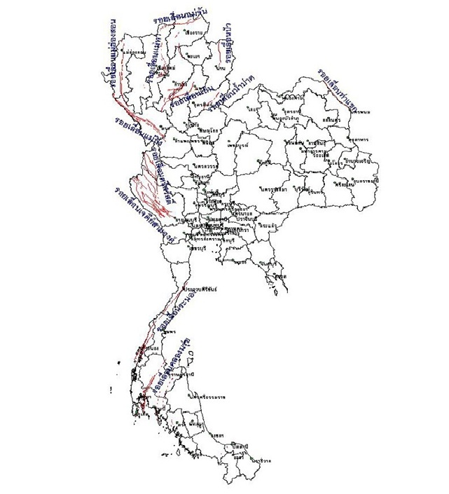
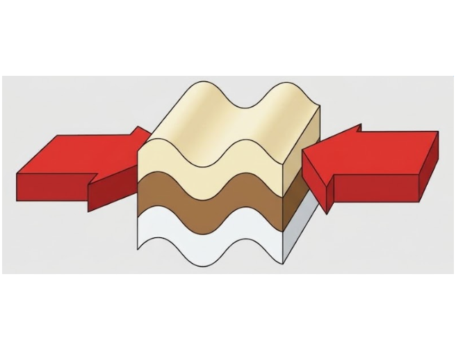
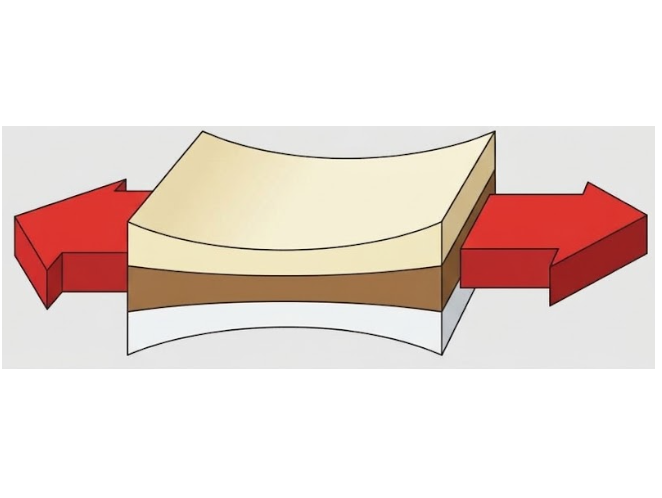
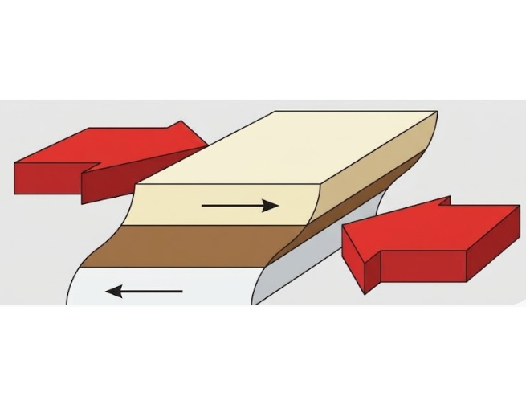
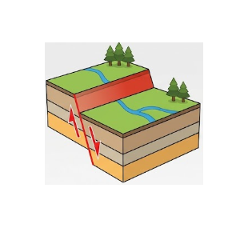
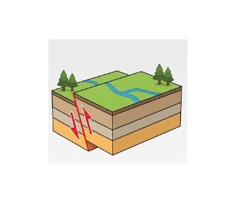
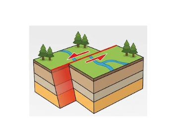

ประเทศไทยไม่ได้อยู่ในวงแหวนแห่งไฟ แต่มีแนวรอยเลื่อนมีพลังพาดผ่าน 23 จังหวัด 124 อำเภอ 421 ตำบล และ 1,520 หมู่บ้าน — เรียนรู้ให้เข้าใจ คือเกราะป้องกันที่ดีที่สุด

รอยเลื่อนไม่ใช่เรื่องไกลตัว แต่เป็นข้อมูลที่ช่วยตัดสินใจเรื่องที่อยู่อาศัย การก่อสร้าง และการเตรียมพร้อมรับมือภัยพิบัติได้อย่างถูกต้อง
รอยเลื่อน (Fault) คือรอยแตกในหินเปลือกโลกที่มีการเคลื่อนตัวของมวลหินสองด้าน ส่วน รอยเลื่อนมีพลัง (Active Fault) คือรอยเลื่อนที่มีหลักฐานว่าเคยเกิดการเลื่อนตัว หรือเกิดแผ่นดินไหวขึ้นแล้วภายในระยะเวลาประมาณ 10,000 ปีที่ผ่านมา จึงมีโอกาสเกิดซ้ำได้อีกในอนาคต
กรมทรัพยากรธรณีสำรวจและประกาศกลุ่มรอยเลื่อนมีพลังของประเทศไทยไว้ 16 กลุ่ม พาดผ่าน 23 จังหวัด 124 อำเภอ 421 ตำบล 1,520 หมู่บ้าน โดยกลุ่มที่ 16 คือ รอยเลื่อนเวียงแหง ประกาศเพิ่มเมื่อปี พ.ศ. 2562
แม้ไทยไม่ได้อยู่ในแนววงแหวนแห่งไฟ แต่ได้รับอิทธิพลจาก การเคลื่อนตัวของแผ่นเปลือกโลก ที่อยู่รอบด้าน ทั้งแผ่นยูเรเซีย แผ่นอินเดีย และแผ่นซุนดา ทำให้เกิดแรงเค้นสะสมในเปลือกโลกและเกิดรอยเลื่อนมีพลังขึ้นภายในประเทศ ทั้งนี้ แผ่นดินไหวขนาดใหญ่ในประเทศเพื่อนบ้าน เช่น เมียนมาและลาว ยังส่งแรงสั่นสะเทือนข้ามพรมแดนมาถึงไทยได้อีกด้วย
รอยเลื่อนในประเทศไทยส่วนใหญ่วางตัวใน 3 แนวหลัก ได้แก่ แนวเหนือ–ใต้, แนวตะวันออกเฉียงเหนือ–ตะวันตกเฉียงใต้ และ แนวตะวันตกเฉียงเหนือ–ตะวันออกเฉียงใต้ ซึ่งแนวเหล่านี้สัมพันธ์กับทิศทางการเคลื่อนตัวของแผ่นเปลือกโลกในภูมิภาค
รอยเลื่อนเกิดจากการสะสมความเค้นในเปลือกโลก ทำให้หินแตกและเคลื่อนตัวออกจากกันในรูปแบบต่าง ๆ ตามชนิดและทิศทางของแรงที่มากระทำ

แรงบีบเข้าหากัน ทำให้หินหนาและสั้นลง เกิดรอยเลื่อนย้อน (Reverse / Thrust Fault)

แรงดึงออกจากกัน ทำให้หินยืดและบางลง เกิดรอยเลื่อนปกติ (Normal Fault)

แรงสวนทางกันในแนวขนาน เกิดรอยเลื่อนตามแนวระนาบ (Strike-Slip Fault)

เกิดจาก แรงดึง (Tension) ที่ทำให้เปลือกโลกแยกออกจากกัน มวลหินด้านบนระนาบรอยเลื่อน (Hanging Wall) จะจมตัวลงตามระนาบที่เอียงชัน ส่วน Footwall อยู่กับที่

เกิดจาก แรงอัด (Compression) ที่ดันเปลือกโลกเข้าหากัน มวลหินด้านบนระนาบ (Hanging Wall) จะถูกดันให้ เคลื่อนขึ้นทับ อีกด้าน ทำให้เปลือกโลกสั้นลงและหนาขึ้น

เกิดจาก แรงเฉือน (Shear) ที่ทำให้มวลหินสองด้านเคลื่อนสวนทางกันในแนวระนาบ ไม่มีการจมหรือยกตัวมากนัก
ข้อมูลสรุปและสถานะกลุ่มรอยเลื่อนมีพลังในประเทศไทย
สำรวจและค้นหาข้อมูลกลุ่มรอยเลื่อนมีพลังจำแนกตามภูมิภาค
สาเหตุที่พบบ่อย: (1) ยังไม่เปิด Maps JavaScript API ในโปรเจกต์ ·
(2) ยังไม่เปิด Billing · (3) ตั้ง HTTP referrer restriction ไม่ตรงกับโดเมนที่เปิด
ตรวจสอบได้ที่ Google Cloud Console → APIs & Services → Credentials
รวบรวม 9 เหตุการณ์ ที่เกิดจากการเลื่อนตัวของรอยเลื่อน พร้อมข้อมูล ขนาด ความลึก พื้นที่ผลกระทบ
รอยเลื่อนมีพลังเป็นโครงสร้างทางธรณีวิทยาที่มีความสัมพันธ์กับการเกิดแผ่นดินไหว การศึกษาลักษณะและการกระจายตัวของรอยเลื่อนช่วยให้เราเข้าใจการเปลี่ยนแปลงของเปลือกโลก และเห็นความสำคัญของการศึกษาข้อมูลทางธรณีวิทยาอย่างเป็นระบบ
เก็บเบอร์เหล่านี้ไว้ในโทรศัพท์ เผื่อเหตุไม่คาดคิด
ถนนสุขุมวิท แขวงบางนาใต้ เขตบางนา กรุงเทพมหานคร 10260
โทร. 02-399-4548 · โทรสาร 02-399-4541
E-Mail : tmdseismo@gmail.com
www.tmd.go.th